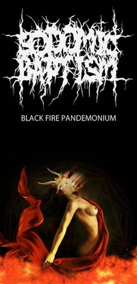

Black Fire Pandemonium
Сайт, помимо основного адреса warrax.net, имеет зеркало warrax.info (пока обновляется с некоторой задержкой).
 НЕ-Учение Тьмы. Сатанизм, XXI век |
|
проект «Δαίμων» |
|  |
Последние добавления: 06.09.2016
- Крысиные имена — Warrax (добавлено)
- Деньги воспитывают целеустремлённых эгоистов — Е. Неймарк
- Вейсман против законов природы — С.Н. Магнитов
- Добавил 13 картинок в раздел "Философское и жизненное" [60] и одну в "СССР" [60]
02.09.2016
- Почему нам чужда и вредна «философия щепки» — К. Сёмин
- Как троцкист Хрущев удушил сталинский метод повышения эффективности экономики — В.А. Торгашев
- Rat's FAQ 2-1: Чем кормить: дополнение о тех, кто любит правильно (видео)
- Rat's FAQ 3б: Клетки: наполнение всяческое (видео)
- Крысофото за июль-август 2016 (30 фото)
28.08.2016
- Сатанинское братство? — М. Роуз
- Классики о кулаках
- Добавил 7 картинок в раздел "Религия: вера" [117]
26.08.2016
- Оккультизм прошлого — А.Ш.ЛаВей
- Коммунизм и социализм: враги или союзники?
- Warrax: Пролетарии как минимум одной страны, вы достали!
- Ixbin: Социалистическое по форме, национальное по содержанию
- Ixbin: Как могут выстраиваться отношения с разными этносами
- Разговор русского коммуниста и русского национал-социалиста
- Позиция-8: К вопросу лимитрофов — Warrax
- Мои работы (последнее добавлено 26.08.2016)
- Видео (последнее добавлено
02.09.2016)
- Видеолекции по логике (последнее добавлено 22.08.2016)
- Rat's FAQ (последнее добавлено 02.09.2016)
- Проект «Δαίμων»
(последнее добавлено 08.06.2016)
- Восприятие ЛаВея в XXI веке (последнее добавлено 15.08.2016)
- другое видео от «Δαίμων» (последнее добавлено 29.04.2015)
- Satanic Oldschool Death Metal group «Sodomic Baptism» (обновлено 29.04.2015)
- Сатанинское (последнее добавлено 28.08.2016)
- Социальное (последнее добавлено 06.09.2016)
- Социалистическое (последнее добавлено 02.09.2016)
- Гносеологическое (последнее добавлено 21.08.2016)
- Религиоведное (последнее добавлено 22.07.2016)
- Научное и историческое (последнее добавлено 06.09.2016)
- Соционика (последнее добавлено 17.06.2014)
- Прозаическое (последнее добавлено 08.07.2016)
- Поэтическое (последнее добавлено 21.06.2014)
- Кинематографическое (последнее добавлено 19.05.2016)
- Крысы (последнее добавлено 06.09.2016)
- Поучительные картинки (последнее добавлено 06.09.2016)
- FAQ по возвращению права на ношение короткоствольного оружия в России v. 1.12 (10/04/11)
- Журнал CONTRA DEI 1-2
Если кто хочет написать, то адрес известен: warrax@warrax.net (ставить понятный subj!)
LiveJournal: http://darkhon.livejournal.com/
Канал YouTube WarraxBFP: https://www.youtube.com/channel/UChsiudPZ0kQd-_Jyxel-bQw
Канал YouTube DaimonBFP: http://www.youtube.com/DaimonBFP
На умные вопросы я всегда стараюсь ответить, но не стесняйтесь напоминать, если задерживаюсь с ответом.
Уведомление. Cайт восстановлен, убрано много-много всяческой шняги. Если кто считает, что я убрал что-либо путное, то пишите в почту, посмотрю ещё раз (книги восстанавливать не буду, всё есть в инете и так). Оформление и движок намечены к концу года, раньше не получится. Сайт сделан на чистом HTML, и поэтому легко копируется любой сайтокачалкой с дальнейшей периодической синхронизацией.
Satanas Nobiscum! — Warrax